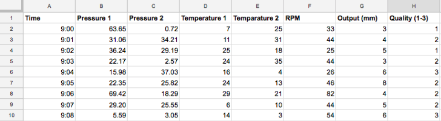

The Blog
Welcome to the Labra AI blog. I promise to keep these short and to the point.
When starting an outsourced AI project you need three things: a lucrative and well-defined business problem, a dataset with relevant information about the problem and an investment of 50-100 consulting hours.
A lucrative and well-defined business problem
For finding a business problem we recommend considering the value the finished AI solution will bring, the probability of success in building the solution and the time it will take to build it. You will probably have the best insight on the value, but even before the dataset has been analyzed your partner should be able to give you some idea on the probability and time scale of building the operational AI.
A financially promising problem has three elements. Firstly, a relevant dataset of the process metrics. Secondly, the process has a high financial impact in the value chain. And thirdly, the process is repeated often giving the financial impact a multiplier.
Additionally, try to distill what it is you want to do with the solution. What is the one variable you want to predict and how many time steps into the future? How accurate does it have to be to bring value? E.g. We want to predict the output quality of our machine 15 minutes into the future, so we can take steps to prevent the quality from dropping below this threshold.
Dataset
Before your partner can start building the AI or analytics for you, you should gather a dataset with relevant information about your problem. It doesn’t have to be extensive. As a rule of thumb, a dataset preferably has at least a thousand rows of data, but even a few hundred is enough to get started. An analysis on a smaller dataset can reveal insights for further data gathering, so it is good to catch those things early.
A dataset doesn’t necessarily need to have labels either. Labels are essentially the correct answer or output of a machine learning model. Labels are the targets a machine learning model trains to find using all of the other information. Without labels the data can be analyzed using non-supervised learning techniques such as Principle Component Analysis or K-means clustering. A dataset with labels is of course preferred, but sometimes acquiring them might be too costly or time consuming. Labels or no, valuable information about the project can be gained or perhaps even the whole problem can be solved using a relatively small amount of relevant data.
An example of a dataset with 7 features and quality as the label we want to predict.
Investment
We believe the first phase of an AI project should quickly and inexpensively investigate how good results can be extracted from the current data available. More information about the problem and the data should be achieved in a period of 2-4 weeks and for an investment of 50-100 consulting hours. Even a proof-of-concept can be completed in this time with a large and relevant dataset with labels.
Getting started
Getting started an AI project started does not take many resources, you simply need the problem, dataset and an initial investment. Even if the data is not all-encompassing, the analysis of your AI partner will yield valuable insights about the problem’s solvability and the data’s quality and quantity, which you need to get the problem solved in any case.